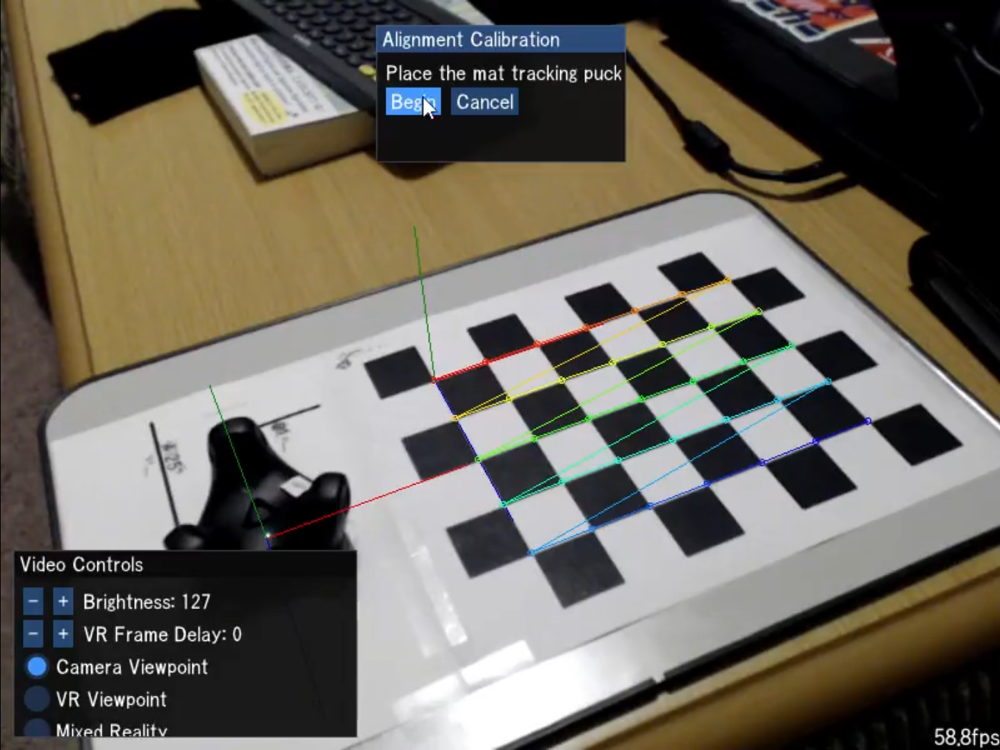

A tool for mixed reality camera calibration and video compositing.
Under development. MikanXR is still heavily under construction and is not really in a usable state yet. Expect rough edges.

Prebuilt releases are Windows only at the moment and are published on the Releases page. After installing, follow the initial setup instructions on the wiki.
To modify or debug the tool, build it yourself by following the Building from source guide. The supported build platform is currently Windows 10, with Linux support hoped for in the near future.
Setup guides, troubleshooting, and design docs live on the project wiki.
src/ is formatted with clang-format and enforced by CI. See CONTRIBUTING.md.When MikanXR crashes it writes a report to Documents\MikanXR\CrashReports and offers to open that folder the next time it starts. Attach the report's .dmp, .txt, and .log files to a GitHub issue along with what you were doing. Nothing is uploaded automatically.
Feel free to use this code as-is, modified, or adapted in other projects, commercial or otherwise. It is intended as a reference that others can make use of in whatever way they see fit.